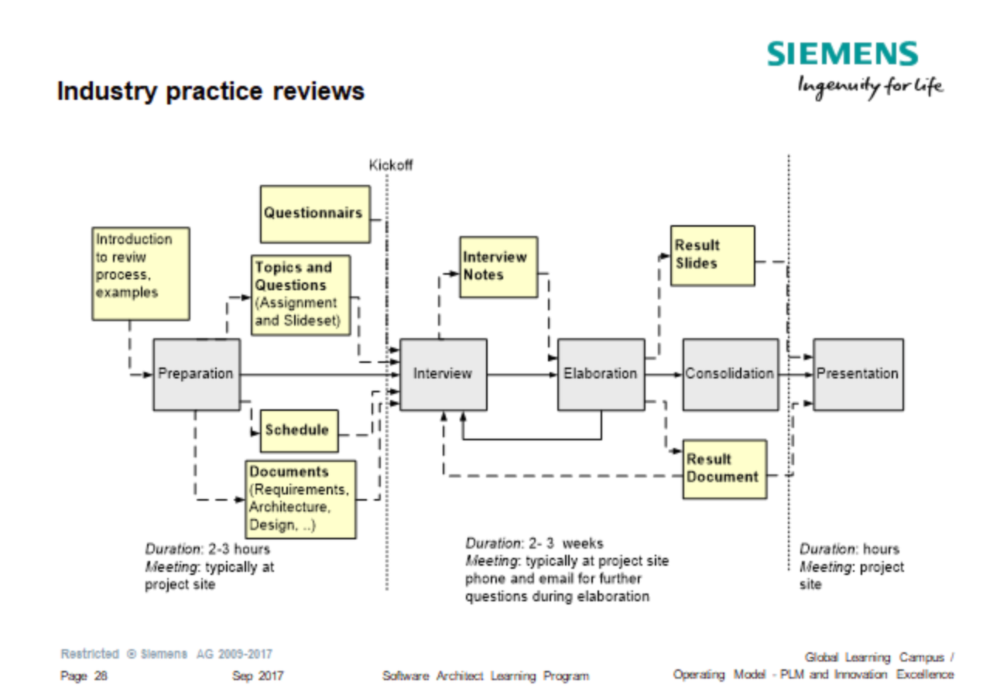
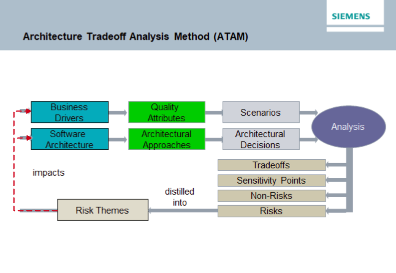
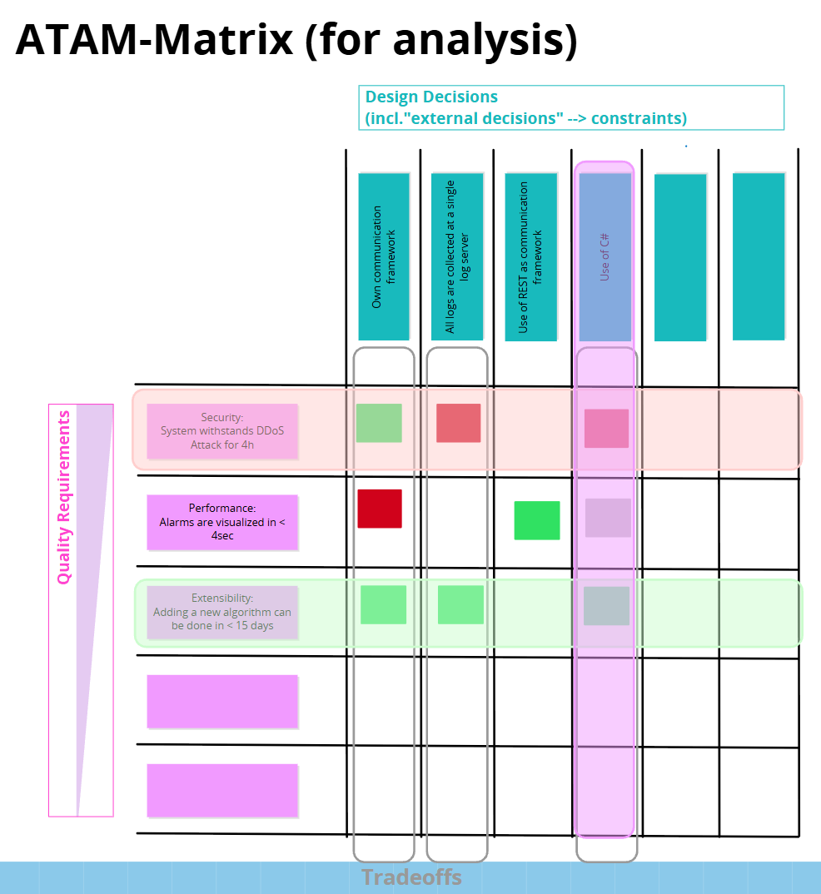
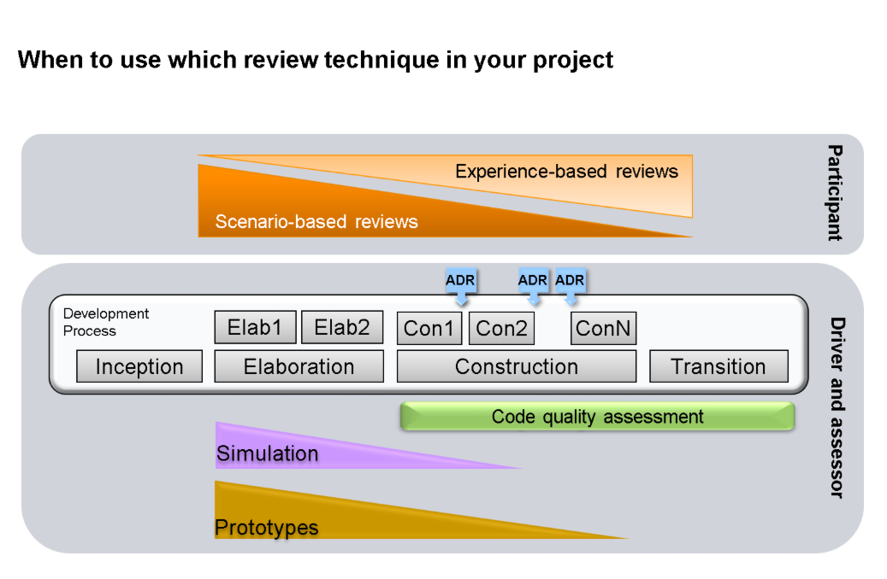

🔵 Architecture Quality & Architecture Review
#Summary / Introduction
This topic ties together two inseparable questions: what makes an architecture good and how do we verify that we actually have one. Architecture quality is not a property that can be declared — it is a property that must be verified. Verification is done through architecture reviews, which fall into quantitative reviews (measurable data about code and behaviour) and qualitative reviews (structured human analysis of the design and its decisions).
For architecture, the topic matters because architectural decisions are expensive and hard to reverse. A flaw in the architecture discovered in production costs orders of magnitude more than the same flaw found during a review. A review is therefore a risk-management instrument, not a formality.
For testing, the topic is key because a review is essentially static verification of the architecture. It works on the same principle as static testing of code: it looks for defects in an artifact before an implementation exists. Quantitative reviews moreover use testing and analysis tooling directly (static analysis, simulation, prototypes), so they form the bridge between architecture and test strategy.
Note on sources: the material is based on the Siemens workshop deck "Software Architect Learning Program" (Workshop 3) and on the public cheat sheet "Clean simple flexible evolvable agile Architecture" (Urs Enzler, bbv Software Services, V1.0 2015, CC BY 4.0). Passages marked as own synthesis are not backed by the source material.
#1. What is architecture quality
#1.1 Intuitive answer vs. systematic framework
When asked "What makes an architecture a good architecture?", people spontaneously answer mostly with internal quality attributes. The following clusters appeared repeatedly in the source material:
| Cluster | Typical formulations |
|---|---|
| Meeting requirements | fits the requirements, fit for purpose, fits to business goals, scoped clearly |
| Quality attributes | meets quality requirements, fulfills the quality attributes |
| Testability | testable |
| Code–design alignment | is realized (code adheres to design), easy to implement right |
| Maintainability and evolvability | maintainable, future-proof, open for future change, extendable, clean |
| Understandability | understandable, easy to teach, not magic, can be implemented by developers |
| Documentation | well documented (up to date, unambiguous, clear), documents why things are the way they are, versioned |
| Simplicity | as simple as reasonably possible, lean |
What is remarkable is what does not appear in intuitive answers: coupling, cohesion, concrete quality scenarios, measurable metrics. That is exactly the difference between a lay and a systematic view of quality — and the reason structured review methods are needed.
#1.2 Five characteristics of a good architecture
The reference framework (bbv cheat sheet) defines five properties that together describe a "good" architecture:
| Characteristic | Core idea | Key sub-categories |
|---|---|---|
| Clean | Details can be replaced, the design can be verified | Dependencies point inwards, dependency inversion, framework independence, testability of business rules without UI/DB/server |
| Simple | Easy to understand (simplicity is subjective) | Consistent decisions (one problem = one solution), number of concepts and technologies, number of interactions, size, modularity |
| Flexible | Supports change | Separation of concerns, software mirrors the user's mental model, abstraction (beware of over-abstraction), lean interfaces, composition over inheritance, acyclic dependencies |
| Evolvable | Easy to adapt step by step | Matches current, not future needs; no dead ends; sacrificial architecture; rolling refactoring (at most two versions of a concept at a time) |
| Agile | Fast change and continuous verifiability | Verifiable at any time (e.g. every sprint), rapid deployment, always working (walking skeleton, simulators) |
For this topic the two most important properties are the ones directly linked to testing: Clean → testability and Agile → continuous verifiability. An architecture that cannot be verified continuously cannot be agile.
#1.3 Forces acting on the architecture
A review makes no sense without understanding what the architecture is fighting against.
Influencing forces: quality attributes (the primary driver of decisions), team knowledge and skills, ease of implementation, cost of operation (most of the cost arises in operation, not in implementation), risks, inherent opportunities, technology churn, and above all trade-offs.
Designing an architecture means making compromises between conflicting goals. The compromises must reflect the prioritization of quality attributes set by the stakeholders, and they must be documented and communicated.
Degrading forces: here is a key distinction that is a frequent exam question:
| Term | Definition |
|---|---|
| Architectural drift | Introducing decisions that the planned architecture neither contains nor implies (the architecture "does not know about them") |
| Architectural erosion | Introducing decisions that directly violate the planned architecture |
Architecture killers: split brain, coupling in space and time, dead-end.
#1.4 Architecture smells
A catalogue of symptoms a review looks for. They arise when a design solution is applied in an unsuitable context:
overlayered architecture, overabstraction, overconfigurability, overkill architecture, futuristic architecture, technology enthusiastic architecture, paper tiger architecture (the architecture exists only on paper, with no link to reality), connector envy, scattered parasitic functionality, ambiguous interfaces, extraneous adjacent connector.
The paper tiger smell is a direct argument for quantitative reviews: without verifying that the code conforms to the design, there is no way to tell whether the documented architecture exists at all.
#2. Why formal process reviews are not enough
This is the argumentative core of the whole topic:
Review methods defined together with the development process are mostly formal and focus on development documents. The review goals delivered with them are not sufficient to achieve the quality goals of a "good architecture".
As responsible architects we must do better.
The difference is fundamental:
| Formal process review | Architecture review |
|---|---|
| Verifies conformance to the process | Verifies the quality of the architecture |
| Checks whether a document exists and has the right chapters | Checks whether the architecture will fulfil the quality scenarios |
| The output is a signature / approval | The output is risks, trade-offs and measures |
| Driven by the process | Driven by the architect |
#3. Taxonomy of reviews
The source material uses two independent axes:
Axis 1 – by the nature of the output:
- Quantitative reviews – measurable data (metrics, measurement results, experiment results)
- Qualitative reviews – structured human analysis (interviews, workshops, challenges)
Axis 2 – by the source of insight:
- Scenario-based reviews – derived from quality scenarios (typically ATAM)
- Experience-based reviews – derived from the reviewers' experience (typically Industry Practice Reviews)
Both axes are complementary and it is good to mention both in the exam.
#4. Quantitative reviews
#4.1 Benefits and liabilities
| Benefits | Liabilities |
|---|---|
| Provide "hard" results | Cover only a narrow slice of concerns or parts of the system |
| Quantifiable, objective basis for choosing between alternatives | Only work if the data is interpreted correctly |
| "Experiments" – easily repeatable with changed parameters | The impact on quality attributes other than the observed one remains unknown |
Analogy from the source material: as with test automation, the up-front investment tends to be high, but it is typically justified by the early detection of conceptual errors.
The liabilities are exactly why quantitative reviews are not sufficient on their own: they measure what they are aimed at, but stay silent about everything else. Only qualitative methods can capture the holistic view and the trade-offs.
#4.2 Three quantitative methods
| Method | Guiding question | Content | What it verifies |
|---|---|---|---|
| Code Quality Assessment | Is the architecture implemented correctly? | Static code analysis: coding rules, metrics, structure analysis / architecture conformance | Conformance of the implementation to the design — i.e. drift and erosion |
| Simulation | Can a certain architectural decision fulfill selected qualities? | Simulation of the system context or of component internals | The behaviour of the chosen decision without needing an implementation |
| Prototyping | Does the architecture fulfill selected qualities? | An incomplete implementation aimed at technical challenges or user acceptance | Real feasibility and acceptance |
Simulation vs. prototype: a simulation is a model of behaviour, a prototype is a real, albeit incomplete, implementation. Only a prototype can answer the question of user acceptance.
The architecturally most valuable part of a Code Quality Assessment is architecture conformance — comparing the actual dependency graph against the intended one. Coding rules and metrics evaluate the micro level; conformance evaluates the architecture.
#4.3 Prototype typology
Purposes of prototypes:
- Explorative – for defining user interfaces; replaces part of the functional specification
- Experimental – for demonstrating technical feasibility
The decision about the prototype's fate must be made up front:
| Type | Approach to quality | Characteristics |
|---|---|---|
| Throw-Away Prototype | "The worst thing that might possibly work" | Deliberately minimal quality, because it will be discarded |
| Incremental Prototype | Full product quality | If the prototype is to become the basis of further development, it must contain structuring, error handling and documentation like production code from the start |
| Evolutionary Prototype | "Consider it as a separate product" | The prototype is extended in several stages and forms its own life-cycle form |
The most common anti-pattern: a throw-away prototype that "accidentally" ends up in production. It is a direct and hard-to-repay source of technical debt.
#5. Qualitative reviews
The qualitative review process has five phases:
Preparation → Execution/Interview → Elaboration → Consolidation → Presentation
For Industry Practice Reviews the process is documented with concrete artifacts and timing:

| Phase | Inputs | Outputs | Duration / form |
|---|---|---|---|
| Preparation | Introduction to the review process, examples | Questionnaires, topics and questions, schedule, document collection (requirements, architecture, design) | 2–3 hours, typically on the project site |
| Kickoff | — | — | dividing point |
| Interview | Preparation outputs | Interview notes | 2–3 weeks, on site; phone and e-mail for follow-up questions |
| Elaboration | Notes, documents | (feedback → follow-up questions back into the Interview) | part of the same block |
| Consolidation | — | Result slides, result document | hours |
| Presentation | Result slides and document | — | hours, on the project site |
The essential insight is that the hardest part is not the interview itself, but the preparation and the elaboration of findings, and that there is a feedback loop between elaboration and interview — a review is not a one-shot act.
#5.1 Active Design Review (ADR)
Guiding question: Is an artifact sufficient to solve a given problem?
Principle:
- Challenges (tasks) are defined to verify the quality of the artifact.
- The reviewer works on the challenge and provides feedback.
The essence of ADR is reversing the reviewer's role. Instead of a passive "read this and tell me what you think" (which leads to superficial agreement), the reviewer gets a concrete task that can be completed from the artifact only if the artifact is sufficient. The inability to complete the task is itself a finding: the artifact is incomplete, ambiguous or inconsistent.
Own synthesis – typical forms of a challenge: write the calling code against the interface; describe the component's behaviour in a given error state; design a test case for a given scenario; list the component's invariants.
ADR evaluates the sufficiency of a design artifact, not the conformance of the implementation to the design — that is how it differs from Code Quality Assessment.
#5.2 Industry Practice Reviews
Essence: a systematic audit of the architectural process through questionnaires, interviews, evaluation and a final presentation.
Characteristics:
- Requires experienced reviewers – the method is not scenario-driven; the quality of the findings depends on whether the reviewer knows what to ask. This is its main limitation.
- Duration of up to six weeks (typically four; a shortened one-day "flash" variant exists).
- Proposes measures – the main differentiating benefit. The output is not just identified risks, but concrete recommended steps.
#5.3 ATAM (Architecture Tradeoff Analysis Method)

Method schema – two branches converging into the analysis:
flowchart LR
BD[Business Drivers] --> QA[Quality Attributes]
QA --> SC[Scenarios]
SA[Software Architecture] --> AA[Architectural Approaches]
AA --> AD[Architectural Decisions]
SC --> AN((Analysis))
AD --> AN
AN --> TO[Tradeoffs]
AN --> SP[Sensitivity Points]
AN --> NR[Non-Risks]
AN --> RI[Risks]
TO --> RT[Risk Themes]
SP --> RT
NR --> RT
RI --> RT
RT -. impacts .-> BD
RT -. impacts .-> SA
Characteristics:
- Requires experienced facilitators – unlike Industry Practice, where the reviewer's domain expertise is needed, ATAM needs process expertise. The method is workshop-based; guiding the discussion between stakeholders is what matters.
- Duration of two weeks, with intensive workshops at the start.
- Focus on qualities – both operational and developmental. Not only performance, availability and security, but also modifiability, testability and extensibility.
Closing the loop is essential: ATAM does not end with a list of findings. Risks are distilled into risk themes, which feed back both into the business drivers (they may lead to re-prioritization) and into the architecture itself (they lead to redesign).
#Definitions of the four core ATAM terms
| Term | Definition |
|---|---|
| Sensitivity Point | An architectural decision that affects a specific quality scenario. The effect can be positive or negative. |
| Tradeoff | A set of sensitivity points for the same decision with conflicting impacts on quality scenarios. |
| Non-Risk | A quality affected predominantly by positive sensitivity points; an architectural decision that respects the prioritization of qualities. |
| Risk | A quality affected predominantly by negative sensitivity points; an architectural decision that violates the prioritization of qualities. |
The most important consequence: both risk and non-risk are defined relative to the prioritization of quality attributes. Without established priorities a risk cannot be determined at all. This precisely explains why the weakness of Industry Practice Reviews is the "missing common understanding of requirement priorities".
#The ATAM Matrix – a working tool

The matrix turns the abstract method into a usable artifact:
- Rows = quality requirements / scenarios, ordered by decreasing importance
- Columns = design decisions, including "external decisions", i.e. constraints
- Cells = sensitivity points with a rating and a rationale
How to use it:
- Add rows for the scenarios (decreasing importance).
- Add columns for constraints and design decisions.
- Rate each cell as a sensitivity point according to the effect of the decision on the scenario. Add the rationale as well.
- Evaluate row by row → Risks / Non-Risks (on the scenarios).
- Evaluate column by column → Good / Bad Decisions, i.e. the trade-offs.
The rating scale distinguishes positive and negative impact with gradations and contains an explicit "?" marker for an impact that has not yet been evaluated. That marker is didactically the most valuable: it forces you to admit the lack of knowledge instead of guessing, and it is a natural input for a prototype or a simulation.
Two modes of use (a significant trade-off):
| Mode | Description | Advantage | Disadvantage |
|---|---|---|---|
| Continuous | The matrix is built and maintained during architecture design | Cheap, continuous, eliminates surprises | Costs time continuously |
| En bloc | A one-off evaluation later on | Deep, focused | Burst effort, problems surface late |
Example from the source material (illustration, not theory):
| Quality requirement (decreasing priority) | Own communication framework | All logs on one log server | Use of REST | Use of C# (constraint) |
|---|---|---|---|---|
| Security: System withstands a DDoS attack for 4 h | positive | negative | — | negative |
| Performance: Alarms visualized in < 4 s | strongly negative | — | positive | not evaluated |
| Extensibility: New algorithm added in < 15 days | positive | positive | — | not evaluated |
The column "own communication framework" is a textbook trade-off: it helps security and extensibility, but harms performance. No decision about it can be made without knowing the priorities — and because Security ranks highest, the decision is defensible. Conversely, "all logs on one log server" is negative against the highest priority (single point of failure, attack target) and is a candidate for a risk.
#6. Comparison of qualitative reviews
| ADR | Industry Practice | ATAM | |
|---|---|---|---|
| Interaction | Designer, reviewer | Interviews | Workshop |
| Phase | Finished detailed design of a component / module | After the architecture has been designed | Architecture complete enough for a walkthrough |
| Strength | Focused on finding defects in the design | Concrete measures | Like SAAM, but a deeper architectural evaluation |
| Key restriction | Small scale | Missing common understanding of requirement priorities | Proposes no measures |
| Duration | 2 days / reviewer | 4 weeks normally, 1 day "flash" | 2 weeks |
Key complementarity: ATAM has "no measures", Industry Practice has "concrete measures". The methods therefore do not exclude each other — ATAM tells you what the problem is, Industry Practice tells you what to do about it.
Growing scope: the number of people involved grows from a pair (ADR) through a series of interviews (Industry Practice) to a workshop with all stakeholders (ATAM). This matches the growing scope of the evaluated artifact: component → architecture → architecture including trade-offs.
Note: SAAM (Software Architecture Analysis Method) is the predecessor of ATAM; the source material only mentions it as a reference point, it does not explain it.
#7. Who takes part in a review
The source material does not systematically cover this question; the following breakdown is own synthesis derived from the "Interaction" criterion in the comparison table and from the "Participant / Driver and assessor" split.
| Role | Contribution to the review | In which method |
|---|---|---|
| Architect (architecture owner) | Presents the architecture and the rationale of decisions; answers questions; is the driver of a review of their own architecture | All |
| Architect from another project | Independent view without operational blindness; acts as a participant also in projects they are not responsible for | ADR, ATAM |
| Reviewer / assessor | Works on the challenge (ADR), conducts the interviews (Industry Practice) | ADR, Industry Practice |
| Facilitator | Runs the workshop, guards the process, does not inject content | ATAM |
| Developers | Know the reality of the implementation; expose the gap between documented and actual architecture | ADR, Industry Practice |
| Testers / QA | Bring data on testability, coverage, defects and NFR test results | Quantitative reviews, ATAM |
| Product Owner / business stakeholder | Owns the prioritization of quality attributes – without it neither risk nor non-risk can be determined | ATAM |
| Operations / security | Bring operational and security scenarios that development does not see | ATAM, Industry Practice |
An essential distinction from the source material: the architect appears in two modes — as a participant (in scenario-based and experience-based reviews) and as a driver and assessor (in ADR, code quality assessment, simulations and prototypes).
#8. When to use which technique

| Project phase | Dominant techniques | Why |
|---|---|---|
| Inception / Elaboration | Prototypes, simulations, scenario-based reviews (ATAM) | Decisions have not been made yet; the goal is to reduce uncertainty and validate concepts while change is still cheap |
| Construction | ADR repeatedly after iterations, code quality assessment | A design exists; the goal is to find defects in the design and to guard code–architecture conformance |
| Transition | Code quality assessment, experience-based reviews | The system is finished; the goal is to verify compliance and collect lessons learned |
The source material shows that scenario-based reviews dominate at the beginning (a decreasing wedge) and experience-based reviews gain importance later (an increasing wedge). ADR is performed repeatedly — the material shows it above every construction iteration, not once. Code quality assessment runs continuously with constant intensity.
Key message: there is no "one review method". The choice is a function of the project phase and of what is uncertain in that phase.
#9. Expectations towards the architect
The conclusion of the whole topic:
You are expected to drive and support appropriate short-term reviews in the scope of your responsibility.
Breaking down the individual words:
- drive and support – the architect is the initiator and facilitator, not a passive recipient of reviews
- appropriate – the method is chosen according to the situation, not according to the process
- short-term – emphasis on short, frequent and cheap reviews (ADR, flash variants) instead of one big formal act
- in the scope of your responsibility – the architect does not wait for permission from above
#10. Reviews and testing
- A review is static verification of the architecture. Like static testing of code, it looks for defects in an artifact before implementation — i.e. as cheaply as possible ("shift left" at the architectural level).
- An ADR challenge is a test case for the design. The reviewer gets an input (the artifact) and a task; the result is binary: the task was completed or it was not. Failure = a defect in the artifact.
- Quantitative reviews use testing tools. Static analysis, simulations and prototypes are technically the same things used in testing; only the subject differs (architecture instead of function).
- ATAM is an input for risk-based testing. Risks and risk themes from ATAM show where the deepest test coverage is needed. Rows with negative sensitivity points are exactly the places where investing in NFR tests pays off.
- The "?" marker in the matrix is a test assignment. An unevaluated sensitivity point means missing knowledge — that is supplied by a prototype, a simulation or a measurement, not by discussion.
- Architecture conformance is a regression test for the architecture. An automated check of the dependency graph against the intended model guards against drift and erosion the same way regression tests guard functional behaviour.
- The quality of a review depends on the testability of the scenarios. The ATAM matrix is only usable if quality requirements are formulated as measurable scenarios (see Quality-scenarios-and-design-tactics.md). Without a Response Measure a cell cannot be rated.
- Testability is itself a subject of review. It belongs to the developmental qualities that ATAM explicitly focuses on.
#11. Example from practice: the trap of paper conformance
The following case is personal experience, not content of the source material. It serves as an illustration of the theses from chapters 2, 4 and 5.
Situation An initial architecture document was produced for a new unified security component. It contained the model of relationships between entities, the logic of the communication exchanges and the definition of the API at the level of declarations and header files. The design was submitted for a formal review in the Decision Group, where delegates of all client products were represented.
Course and formal result All stakeholders approved the architecture. At the level of the document and the declarations the design was consistent, the parameters matched and there was nothing to object to technically. The review was closed as successful.
What the review did not uncover The subject of the evaluation was exclusively a static artifact — a document and empty interfaces. No integrated, even trivial, running version was evaluated (a walking skeleton with mock data). That kept the decisive factor hidden: the effort for the adapter classes on the client side was so high that the client products eventually refused to adopt the component.
The approved architecture was therefore technically correct and at the same time unusable. The formal agreement of the stakeholders was no proof of quality, because at that moment agreement cost nobody anything — the cost only materialized during integration.
Link back to theory
| Phenomenon in the case | Concept from theory | Chapter |
|---|---|---|
| Approving a document with no link to reality | A formal process review verifies the process, not the quality | 2 |
| Architecture existing only in a document and headers | Paper tiger architecture | 1.4 |
| Everybody agreed, nobody found a finding | Passive review instead of defined challenges (ADR) | 5.1 |
| The integration effort was never measured | A missing prototype as a quantitative review | 4.2 |
| "Ease of integration" was not formulated as a measurable scenario | A developmental quality outside the prioritization | 5.3 |
| The impact of the decision on integration was unknown but not flagged | A sensitivity point with the "?" marker instead of a guess | 5.3 |
| The review happened once over a finished document | Missing continuous verifiability (the agile characteristic) | 1.2 |
Which review would have uncovered the problem
- An ADR challenge: give a representative of a client product the task "write the calling adapter class against this interface". The impossibility or disproportionate effort of the task is a finding.
- A prototype aimed at user acceptance: integrating one real client with mock data provides measurable data about the effort.
- The ATAM matrix: a row "integrate a new client within X days" would, in the column "own adapter layer", lead to a negative sensitivity point, or to a "?" marker requiring measurement.
Conclusion for the exam A review of static documentation or empty interfaces provides false confidence. Stakeholder agreement says something about the understandability of the design, not about its feasibility — at the moment of approval a stakeholder bears no cost and therefore has no motivation to look for flaws. A valuable review therefore requires either an active task for the participants (ADR) or a running artifact, however minimal (walking skeleton, prototype). Only then does the real integration barrier and the non-technical forces that decide the adoption of an architecture become visible.
#Definitions and basic terms
| Term | Definition | Meaning in architecture | Meaning in testing | Typical mistake / misunderstanding |
|---|---|---|---|---|
| Architecture review | Structured evaluation of an architecture aiming to uncover risks, defects and trade-offs | An instrument to manage the risk of expensive and irreversible decisions | Static verification of the architecture, "shift left" | Confusing it with the formal approval of a document |
| Quantitative review | An evaluation producing measurable data | An objective basis for choosing between alternatives | Uses static analysis, simulations, prototypes | Treating numbers as a complete picture of quality |
| Qualitative review | Structured human analysis of the design and its decisions | Captures the holistic view and the trade-offs | Uncovers ambiguities before tests are written | Running it without preparation and without structure |
| Code Quality Assessment | Static analysis: coding rules, metrics, architecture conformance | Uncovers drift and erosion | Regression check of the architecture | Measuring only metrics and omitting architecture conformance |
| Architecture conformance | Comparison of the actual dependency graph against the intended one | The only method proving that the documented architecture exists | An automatable check | Relying on the design being followed because it is documented |
| Simulation | A model of the behaviour of the system context or of component internals | Verifies a decision without an implementation | Enables NFR verification before the system exists | Confusing it with a prototype |
| Prototype | An incomplete implementation aimed at a technical challenge or acceptance | Reduces uncertainty, breaks risks | A source of data for evaluating a scenario | Letting a throw-away prototype reach production |
| Throw-away / Incremental / Evolutionary prototype | Three strategies for handling a prototype | The decision must be made up front | Determines what test quality is needed | Deciding only after the prototype works |
| Active Design Review (ADR) | A review where the reviewer solves defined challenges on the artifact | Verifies the sufficiency of a design artifact | A challenge is a test case for the design | Passive reading instead of an active task |
| Industry Practice Review | A systematic audit of the architectural process (questionnaires, interviews, evaluation, presentation) | Delivers concrete measures | Also assesses the project's testing practice | Relying on inexperienced reviewers |
| ATAM | A scenario-driven workshop method analysing trade-offs between qualities | Uncovers risks and trade-offs of architectural decisions | Input for risk-based testing | Expecting ATAM to also deliver solutions |
| Sensitivity Point | An architectural decision affecting a specific quality scenario | A cell in the ATAM matrix; it has a sign | Shows which quality must be verified | Treating a sensitivity point as automatically negative |
| Tradeoff | A set of sensitivity points for the same decision with conflicting impacts | A column of the matrix; the core of architectural decision making | The need to verify both affected qualities | Confusing it with a single sensitivity point |
| Risk | A quality affected predominantly by negative sensitivity points / a decision violating the prioritization of qualities | A candidate for redesign | The place for the deepest test coverage | Determining risk without an established prioritization of qualities |
| Non-Risk | A quality affected predominantly by positive sensitivity points / a decision respecting the prioritization | Confirmation that the decision is right | An area where basic coverage suffices | Not recording non-risks (the argumentation gets lost) |
| Risk Theme | Aggregation of risks into a risk area | Feeds back into both business drivers and architecture | Determines the topics of the test strategy | Stopping at a list of findings without aggregation |
| Architectural drift | Introducing decisions the architecture neither contains nor implies | Gradual degradation | Detectable by architecture conformance | Confusing it with erosion |
| Architectural erosion | Introducing decisions that directly violate the architecture | Acute degradation | Detectable by architecture conformance | Confusing it with drift |
| Paper tiger architecture | An architecture existing only on paper, with no link to reality | The most serious smell from a review perspective | Only conformance or ADR will uncover it | Treating the existence of a document as proof of an architecture |
| Scenario-based vs. experience-based review | A split by the source of insight | Determines when a method is applicable | Scenario-based builds on quality scenarios | Knowing only the quantitative/qualitative split |
#Common mistakes and anti-patterns
| Mistake / anti-pattern | Why it is a problem | How it shows up | How to prevent it |
|---|---|---|---|
| Review as formal approval | The process is verified, not the quality of the architecture | A signed document, but the architecture has serious risks | Define the content goals of the review independently of the process |
| Passive review ("please read this") | The reviewer has no reason to go deep, superficial agreement arises | "Looks good", no findings | Use ADR – define concrete challenges |
| Reviewing only a document and empty interfaces | Stakeholder agreement costs nothing at that moment, so there is no motivation to look for flaws | Unanimous approval with no findings; the problem appears during integration | Add a running artifact (walking skeleton, prototype) or an active challenge for the participants |
| ATAM without an established prioritization of qualities | Neither risk nor non-risk can be defined | A debate about opinions instead of about risks | Prioritize the quality scenarios first (utility tree), then run ATAM |
| Rating a matrix cell without a rationale | A colour without an argument is neither transferable nor defensible | In a month nobody knows why that colour is there | Always record the rationale; link it to ADRs (decision records) |
| A guess instead of the "?" marker | False confidence arises | A decision built on an assumption | Use the marker for "not evaluated" and fill it in with a prototype or simulation |
| Expecting solutions from ATAM | By design, ATAM proposes no measures | Disappointment with the output, the review is declared useless | Combine it with Industry Practice or follow it with a separate measure-design phase |
| Industry Practice with inexperienced reviewers | The method is not scenario-driven, quality depends on experience | A superficial questionnaire, generic conclusions | Staff it with experienced assessors, otherwise choose a scenario-based method |
| A throw-away prototype in production | Code deliberately without structure, error handling and documentation | Permanent technical debt, instability | Decide the prototype's fate up front; incremental = full production quality from the start |
| Relying only on code metrics | Metrics do not see the architecture | Green dashboards and a broken structure | Add architecture conformance and qualitative reviews |
| Omitting architecture conformance | A paper tiger architecture cannot be detected | Documentation and reality silently diverge | Automate the dependency check in CI |
| One big review at the end of the project | Findings arrive when change is most expensive | "There is nothing we can do about it now" | Short, frequent (short-term) reviews along the way |
| Reviewing only your own architecture | An independent view is missing, operational blindness | Confirming your own assumptions | Participate in reviews of other architectures as a participant |
| Missing business stakeholder in ATAM | The owner of the quality prioritization is missing | Architects set the priorities themselves and miss the business | Ensure the attendance of the person who decides the priorities |
| Testers excluded from the review | Data on testability and defects gets lost | The architecture is formally approved and yet untestable | Include QA among the participants; evaluate testability explicitly |
| Choosing a method by fashion, not by phase | The method does not match what is uncertain | ATAM on a project without an architecture; prototypes in the transition phase | Follow the mapping of techniques to project phases |
| Choosing a method without regard to cost | The review eats the budget | A four-week audit on a two-month project | Compare the durations of the methods; consider flash variants |
#Exam questions
Basic level
- How are architecture reviews categorized? → Quantitative vs. qualitative; additionally scenario-based vs. experience-based.
- Name three quantitative methods. → Code quality assessment, simulation, prototyping.
- Name three qualitative methods. → Active Design Review, Industry Practice Reviews, ATAM.
- What are the phases of a qualitative review? → Preparation, Interview/Execution, Elaboration, Consolidation, Presentation.
- What is an Active Design Review? → A review where the reviewer solves defined challenges on the artifact; it verifies whether the artifact is sufficient.
Intermediate level
- What is the difference between a simulation and a prototype? → A simulation is a model of behaviour, a prototype a real incomplete implementation; only the prototype addresses user acceptance.
- What is the difference between architectural drift and erosion? → Drift introduces decisions the architecture does not contain; erosion introduces decisions that violate it.
- Define sensitivity point and tradeoff. → Sensitivity point = a decision affecting one scenario; tradeoff = a set of sensitivity points of the same decision with conflicting impacts.
- How are risk and non-risk determined in ATAM? → By the predominance of negative/positive sensitivity points and by whether the decision respects the prioritization of qualities.
- Why are quantitative reviews insufficient on their own? → They cover a narrow slice, the impact on other qualities stays unknown, and they depend on the correct interpretation of the data.
- What are the three strategies for handling a prototype? → Throw-away, incremental (full production quality from the start), evolutionary (a separate product).
Advanced level
- How do ATAM and Industry Practice Reviews relate to each other? → Complementarily: ATAM identifies the problem but proposes no measures; Industry Practice supplies the measures.
- Why can ATAM not be done without a prioritization of quality attributes? → Both risk and non-risk are defined relative to the prioritization; without it you cannot decide whether a negative impact is acceptable.
- How is the ATAM matrix used and what do the row-wise and column-wise evaluations mean? → Rows → risks/non-risks on the scenarios; columns → good/bad decisions and trade-offs.
- What are risk themes and why do they matter? → Aggregations of risks; they feed back into business drivers and architecture — they close the method's loop.
- Why are formal process reviews not enough? → They verify conformance to the process and the form of documents, not the fulfilment of quality goals.
- How do reviews relate to testing? → A review is static verification of the architecture; quantitative methods use testing tools; ATAM outputs drive risk-based testing.
Questions about practical experience
- Have you ever performed an Active Design Review? How did you formulate the challenge? → A concrete task is expected, not "read it", plus a description of what the failure to complete it revealed.
- Did you apply the ATAM matrix to your project? → A description of the chosen scenarios, decisions, the trade-off found and what was done about it is expected.
- Have you taken part in a review of an architecture you are not responsible for? What did it bring? → The value of the independent view and the transfer of insights back are expected.
- How do you guard code–architecture conformance in your project? → Architecture conformance is expected, ideally automated in CI.
- Have you experienced a review that was formally successful and yet the architecture failed? → An analysis of the cause (a static artifact was evaluated, a missing challenge or running code) and a description of what would have uncovered the problem are expected.
Decision and trade-off questions
- You have two weeks and an architecture in progress. Which method do you choose and why? → ATAM is expected (2 weeks, needs an architecture "complete enough for a walkthrough") with a justification, or a flash variant of Industry Practice.
- ATAM or Industry Practice? → Depending on whether you need to identify risks and trade-offs (ATAM) or to obtain concrete measures (Industry Practice); ideally a combination.
- Build the ATAM matrix continuously or evaluate en bloc? → Continuously is cheaper and eliminates surprises but costs time; en bloc is deep but late.
- The prototype worked – shall we use it as the basis of the product? → Only if it was written as incremental with production quality from the start; otherwise it is a source of technical debt.
- How many reviews are "enough"? → Short, frequent reviews within the architect's scope of responsibility; big formal reviews only where the risk justifies them.
#Model answer (4–6 minutes)
An architecture review is a structured evaluation of an architecture aiming to uncover risks, design defects and trade-offs. It is a risk-management instrument, because architectural decisions are expensive and hard to reverse — a flaw found in production costs orders of magnitude more than a flaw found in a review.
Before talking about reviews, one has to say what is actually being evaluated. A good architecture is usually described by five characteristics: it should be clean, i.e. allow details to be replaced and the design to be verified; simple, i.e. easy to understand; flexible, i.e. supporting change; evolvable, i.e. adaptable step by step; and agile, i.e. continuously verifiable and quickly deployable. Working against this are the degrading forces — architectural drift, where decisions are introduced that the architecture does not contain at all, and architectural erosion, where decisions are introduced that directly violate it.
An important starting assumption: formal reviews defined together with the development process are not enough. They verify conformance to the process and the form of documents, not the fulfilment of quality goals. That is why we need dedicated methods.
These split into quantitative and qualitative. Quantitative reviews give hard, measurable data and are repeatable like an experiment, but they always cover only a narrow slice and stay silent about the impact on other qualities. They include the code quality assessment, which answers whether the architecture is implemented correctly — besides coding rules and metrics, the architecturally most valuable part is architecture conformance, i.e. comparing the actual dependency graph against the intended one. Then simulation, which verifies whether a given decision can fulfil selected qualities, using a model of the system context or of component internals. And the prototype, i.e. an incomplete implementation aimed at technical challenges or user acceptance. With a prototype it is essential to decide up front what will happen to it: a throw-away prototype may deliberately be minimal, but an incremental prototype that is to become the basis of the product must have production quality from the first line.
Qualitative reviews have five phases — preparation, interview or workshop, elaboration, consolidation and presentation — and come in three main variants. The Active Design Review answers whether an artifact is sufficient to solve a given problem. Its essence is that the reviewer does not read passively but receives a concrete challenge that can only be completed if the artifact is complete and unambiguous. It takes two days per reviewer and focuses on finding design defects, but its scale is small. The Industry Practice Review is a systematic audit of the architectural process via questionnaires and interviews. It takes four to six weeks, requires experienced reviewers, and its main strength is that it proposes concrete measures; its weakness is the missing common understanding of requirement priorities. And ATAM is a workshop-based, scenario-driven method that takes about two weeks and requires an experienced facilitator.
ATAM works in two branches: quality attributes are derived from the business drivers and scenarios from them; architectural approaches and decisions are derived from the software architecture. The analysis of both branches produces four outputs — sensitivity points, tradeoffs, risks and non-risks. A sensitivity point is an architectural decision affecting a specific scenario, either positively or negatively. A tradeoff is a set of sensitivity points for the same decision with conflicting impacts. A risk is a quality affected predominantly negatively, or a decision violating the prioritization of qualities; a non-risk is the opposite. This yields the key insight: without an established prioritization of quality attributes a risk cannot be determined at all. Risks are then distilled into risk themes, which feed back into the business drivers and the architecture — this closes the method's loop.
In practice ATAM is done with a matrix. The rows are scenarios ordered by decreasing importance, the columns are design decisions including external constraints, the cells are rated sensitivity points — always with a rationale. Row-wise evaluation yields risks and non-risks, column-wise evaluation yields trade-offs. On a project where we had scenarios for withstanding a DDoS attack for four hours, visualizing alarms within four seconds, and adding a new algorithm within fifteen days, the column "own communication framework" revealed a classic trade-off: it helped security and extensibility but strongly harmed performance. Because security was the top priority, the decision was defensible — but only thanks to the priorities having been established beforehand.
For testing the whole topic is essential, because a review is in fact static verification of the architecture — shift left at the architectural level. A challenge in an ADR works as a test case for the design. Quantitative methods use testing and analysis tools directly. And risks from ATAM are an input for risk-based testing: they say where the deepest coverage is needed. The marker for an unevaluated sensitivity point is also interesting — an admitted lack of knowledge is an assignment for a prototype or a measurement, not for a guess.
The main trade-off of the topic is between the depth of a review and its cost. ATAM identifies problems but proposes no measures; Industry Practice supplies the measures but is the most expensive; ADR is the cheapest but small in scale. The methods are therefore combined and chosen according to the project phase: scenario-based and prototype approaches early, when change is cheap, ADR repeatedly during construction, code quality assessment continuously.
In summary: architecture quality cannot be declared, it must be verified. Quantitative reviews give hard data about a narrow slice, qualitative reviews capture the trade-offs and the risks of the whole, and it is the architect's responsibility to drive and support appropriate short-term reviews within their scope of responsibility — not to wait for the process to mandate them.
#Short version for quick revision (cheat sheet)
5 main points
- A formal process review verifies the process, not the quality of the architecture — dedicated methods are therefore needed.
- Split: quantitative (code quality assessment, simulation, prototyping) vs. qualitative (ADR, Industry Practice, ATAM); additionally scenario-based vs. experience-based.
- ATAM: sensitivity point (cell) → tradeoff (column) → risk/non-risk (row) → risk themes (feedback to drivers and architecture).
- ATAM proposes no measures, Industry Practice does — the methods are complementary.
- The choice of method is a function of the project phase and of what is uncertain; the architect drives short, frequent reviews.
5 key terms
- Sensitivity point vs. Tradeoff
- Risk / Non-Risk (defined relative to the prioritization of qualities)
- Architectural drift vs. erosion
- Architecture conformance
- Throw-away vs. incremental prototype
5 typical exam questions
- How are architecture reviews categorized and which methods belong where?
- What is an Active Design Review and why is it "active"?
- Define sensitivity point, tradeoff, risk and non-risk.
- Compare ADR, Industry Practice and ATAM by strength, restriction and duration.
- How do reviews relate to testing?
3 most common mistakes
- Running ATAM without an established prioritization of quality attributes.
- A passive review instead of defined challenges.
- Letting a throw-away prototype reach production.
1 model sentence for the exam "Architecture quality cannot be declared, it must be verified: quantitative reviews give hard data about a narrow slice, qualitative reviews capture the trade-offs and the risks of the whole — and it is the architect's responsibility to drive appropriate short-term reviews within their scope of responsibility."
#Learning outcome (LOPO)
According to the document Learning and practice outcomes (LOPO), row Architecture Quality Assessments (Workshop 3):
| Category | Expected outcome | Where it is covered in this material |
|---|---|---|
| Learning | Prepare and conduct an active design review, give and receive feedback | Chapter 5.1 Active Design Review, section Common mistakes (passive review) |
| Learning | Apply the "ATAM Matrix" to a subset of quality scenarios and design decisions of a project | Chapter 5.3 ATAM Matrix including the procedure and the example |
| Practice | Select a suitable review method and initiate a review of (parts of) your own architecture | Chapters 6 Comparison of qualitative reviews, 8 When to use which technique, 9 Expectations towards the architect |
| Practice | Participate in a review of an architecture you are not responsible for | Chapter 7 Who takes part in a review (the role "architect from another project", the participant mode) |
| Understand | Know when to perform architecture reviews in a project | Chapter 8 When to use which technique (mapping to phases) |
| Understand | Know how to use architecture reviews in different situations and from different perspectives | Chapters 3 Taxonomy of reviews, 6 Comparison, 7 Who takes part in a review |
| Analyze & Assess | Check whether the architecture is right | Chapter 5 Qualitative reviews (ADR, ATAM) |
| Analyze & Assess | Check whether the architecture you are responsible for is implemented correctly | Chapter 4.2 Code Quality Assessment / architecture conformance |
| Contribute & Drive | Regularly drive reviews of your own architecture | Chapter 9 Expectations towards the architect ("drive and support appropriate short-term reviews") |
Compatibility assessment: all nine LOPO items of the row Architecture Quality Assessments are covered by this material. Two Learning items (conduct an ADR, apply the ATAM matrix) are practical by nature — the material provides the theoretical basis and the procedure; the actual practice happens in the workshop and in the project.
#Summary table
| Area | What matters | Relation to architecture | Relation to testing | Typical exam question |
|---|---|---|---|---|
| Architecture quality | Clean, simple, flexible, evolvable, agile | Defines what a review evaluates | Clean → testability, Agile → continuous verifiability | What makes an architecture good? |
| Degrading forces | Drift vs. erosion, architecture smells | Describe how an architecture decays | Detectable by static analysis | What is the difference between drift and erosion? |
| Taxonomy of reviews | Quantitative/qualitative, scenario-/experience-based | Determines which method to use when | Distinguishes measuring and analytical approaches | How are architecture reviews categorized? |
| Quantitative reviews | Hard data, narrow scope, repeatable | Objective choice between alternatives | Uses static analysis, simulations, prototypes | Why are quantitative reviews not enough? |
| Code Quality Assessment | Coding rules, metrics, architecture conformance | Proves that the architecture really exists | Regression check of the architecture in CI | How do you verify code–architecture conformance? |
| Simulation / Prototyping | Model vs. incomplete implementation | Reduce uncertainty before a decision | Supply data for evaluating scenarios | What is the difference between a simulation and a prototype? |
| Prototype strategies | Throw-away / incremental / evolutionary | The decision must be made up front | Determines the required level of quality and tests | Will you use the prototype as the basis of the product? |
| Active Design Review | A challenge instead of passive reading | Verifies the sufficiency of a design artifact | A challenge = a test case for the design | Why is ADR "active"? |
| Industry Practice Review | Process audit, concrete measures | Delivers recommendations, not just findings | Also assesses the project's testing practice | What is the method's strength and limitation? |
| ATAM | Scenarios × decisions → trade-offs and risks | The core of architectural decision making | Risks drive risk-based testing | How does ATAM work and what does it produce? |
| ATAM terms | Sensitivity point, tradeoff, risk, non-risk | A vocabulary for arguing about decisions | Show which quality to verify and how deeply | Define sensitivity point and tradeoff |
| ATAM Matrix | Rows = scenarios, columns = decisions, cells with rationale | A practical artifact of the architect | "?" = an assignment for a prototype or measurement | How is the matrix evaluated by rows and by columns? |
| Comparison of methods | Interaction, phase, strength, restriction, duration | A basis for choosing a method | Distinguishes effort and return | Compare ADR, Industry Practice and ATAM |
| Review participants | Architect, reviewer, facilitator, developers, QA, business | The business owns the prioritization of qualities | QA brings data on testability and defects | Who takes part in a review and why? |
| Choosing a technique | By project phase and degree of uncertainty | Scenarios early, ADR continuously, conformance always | Determines when testing tools come in | When do you use which technique? |
| The architect's responsibility | Drive and support appropriate short-term reviews | The architect is the initiator, not the recipient | Short frequent reviews = cheap defect detection | How many reviews are "enough"? |